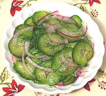

|
Cucumber Dill SaladNorthern Europe, Baltic, Poland, Russia | ||||
| Makes: Effort: Sched: DoAhead: |
3 cups * 1-1/4 hrs Best |
This recipe is adapted from a database dedicated to Central and Eastern European Jews, but is typical of salads made by other cultures in Poland and thereabouts. | |||
|
1 1/2 4 1/3 1/3 1 1/8 few |
# t oz c c T t |
Cucumbers (1) Salt Onion Vinegar (2) Water Sugar Pepper, black Dill springs |
Make - (1-1/4 hr -12 min work)
|